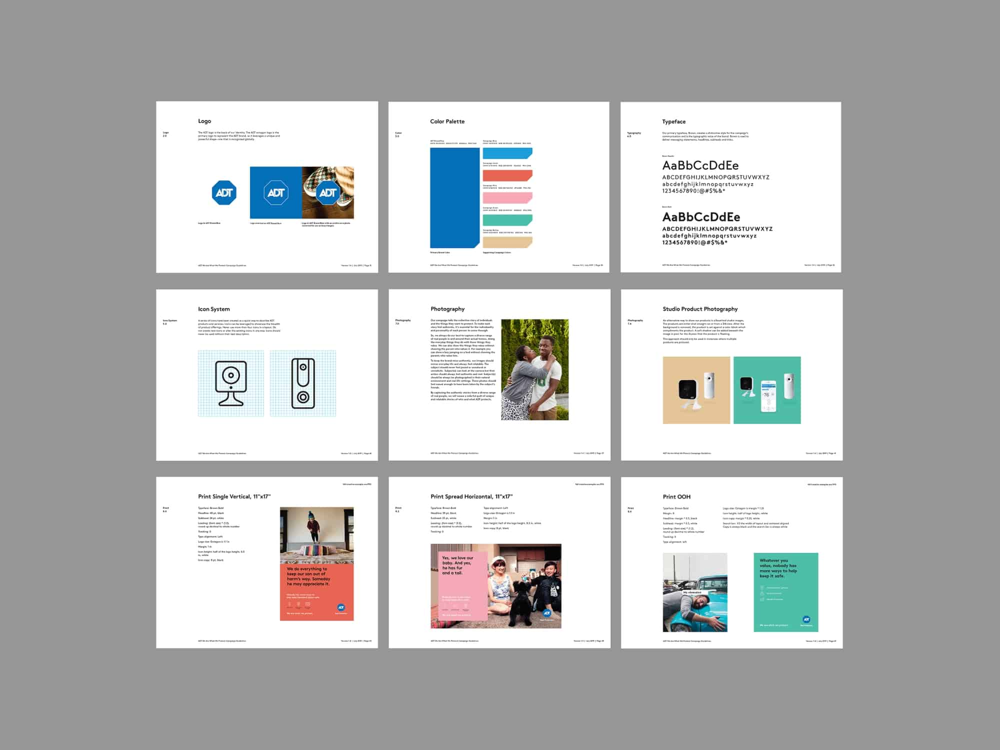
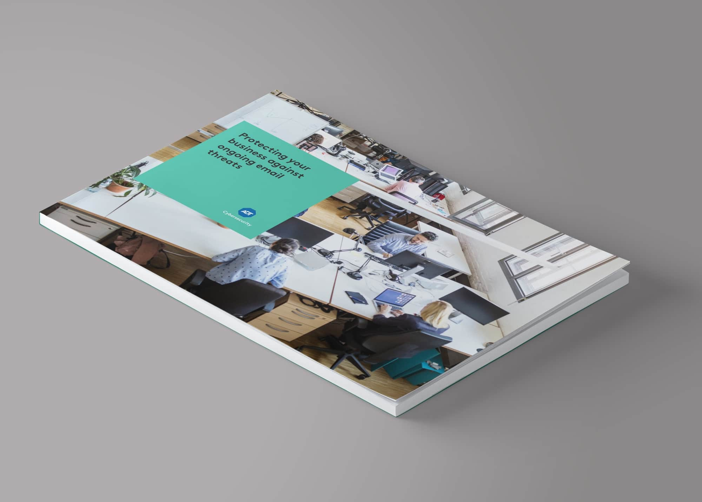
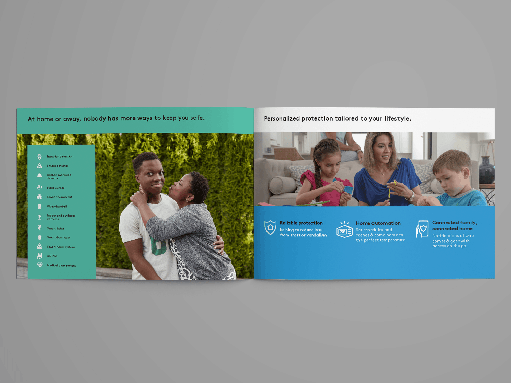
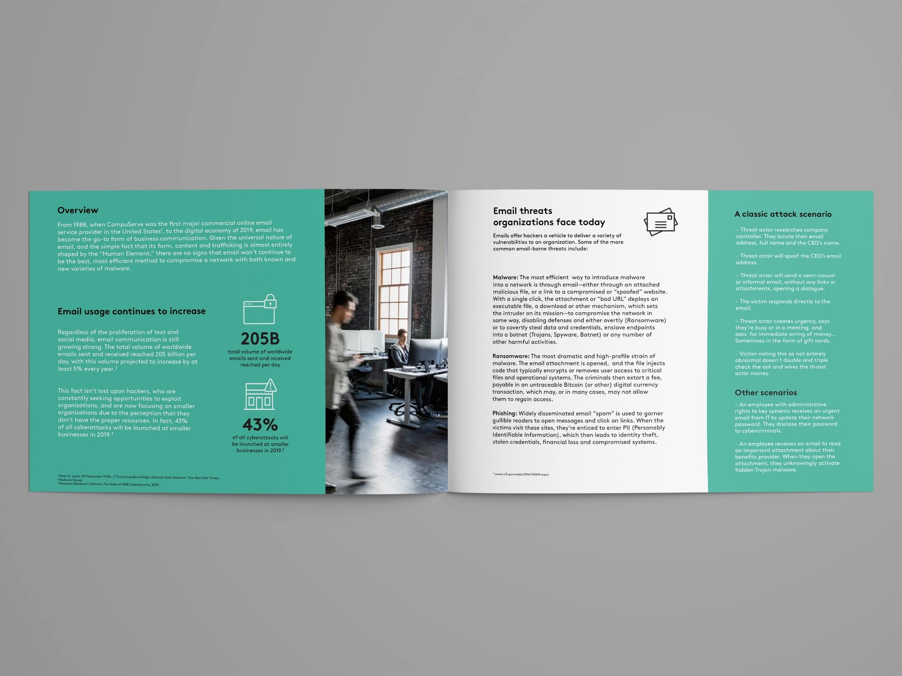
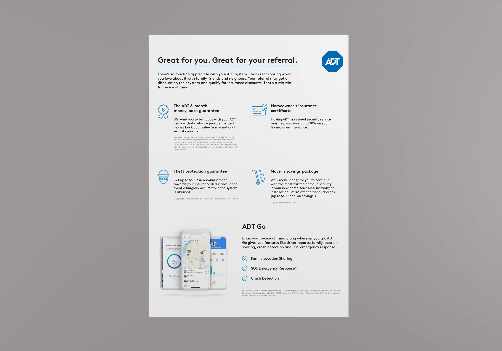
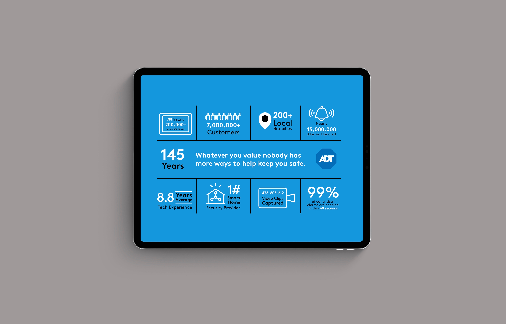

The Challenge
A key challenge was balancing ADT's traditional image with the new, modern identity. We addressed this by integrating familiar elements with fresh, innovative visuals and messaging. This approach successfully positioned ADT as a forward-thinking leader while maintaining trust with long-time customers.







Outcomes that Revitalized a Brand
For the ADT rebrand, I worked with the team to produce a complete marketing toolkit designed to support ongoing campaign needs. My contributions included conversion-optimized web pages and landing page templates that could be quickly adapted for different products and promotions, multi-platform ad campaigns spanning Facebook, Instagram, display networks, and programmatic channels, and print materials for both in-store activations and direct mail programs.
I also helped develop comprehensive brand guidelines that went beyond just showing the visual identity. They included ready-to-use templates and modular components the marketing team could leverage for future campaigns. All deliverables came with organized source files, structured asset libraries, and clear usage documentation, enabling the internal team to execute new campaigns efficiently without needing design support for every iteration.